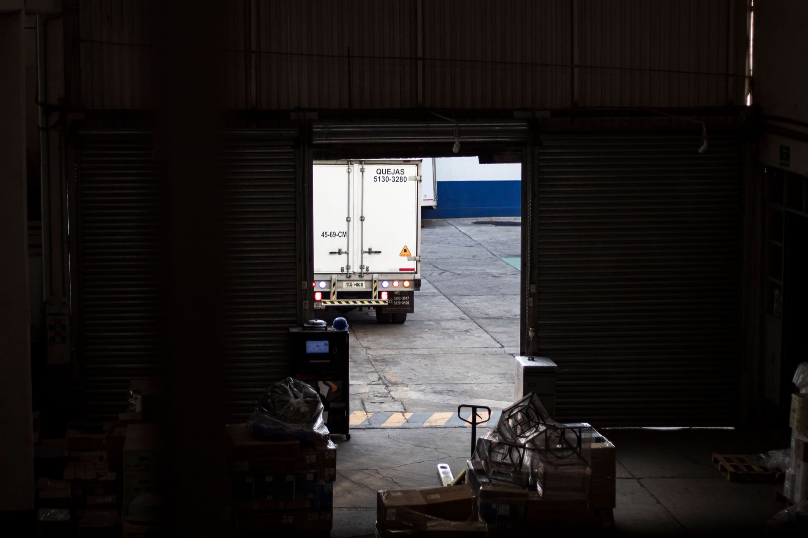
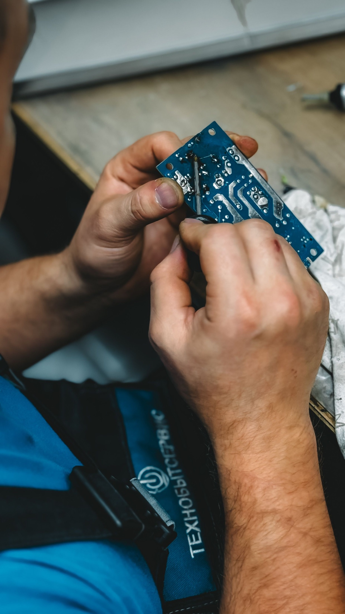

01Inventory operations Discuss this service ↗
Warehousing & Distribution
Inventory management, customized fulfillment, and delivery coordinated under one roof.
Warehousing · Fulfillment · Returns
Jiant Solutions connects receiving, inventory operations, customized fulfillment, drop-ship, and returns recovery in one practical workflow.
One connected operation
Fewer disconnected handoffs. A clearer path for products moving out, coming back, and finding their next best outcome.
What we do
Four connected capabilities, composed as one flexible operating model for the needs of your products and sales channels.
Inventory management, customized fulfillment, and delivery coordinated under one roof.
Manage open-box returns, inspect and refurbish products, and support value recovery through resale.
Operational support designed around your products, sales channels, and changing needs.

Receive, process, and ship orders directly to customers with a focus on dependable execution.
The operating route
The path can keep moving forward—or loop returned products into a new value decision without losing the thread.
Check in inbound inventory.
Organize products for every channel.
Coordinate inventory and orders.
Process, pack, and route orders.
Bring products into a decision flow.
Inspect, refurbish, or resell.
Reverse logistics
Jiant Solutions helps open-box and returned products move through inspection, refurbishment, resale support, or the right disposition.
Discuss your returns workflow ↗
Partner ecosystem
Start the next move
Email Jiant Solutions about your warehouse, fulfillment, returns, or drop-ship needs.